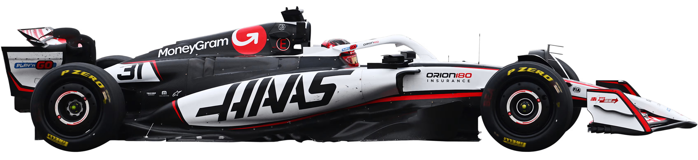
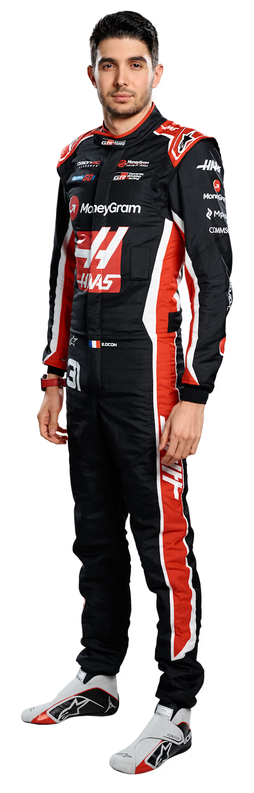
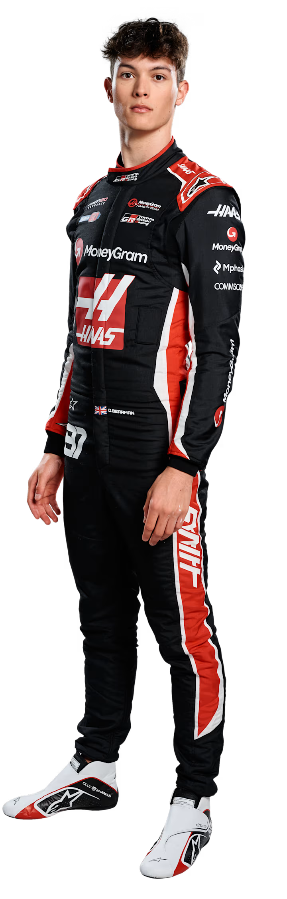

A equipa mais jovem da grelha, a Haas fez uma estreia impressionante em 2016 e tornou-se a primeira equipa liderada inteiramente por norte-americanos em três décadas. Fundada pelo industrial Gene Haas, está sediada nos Estados Unidos, nas mesmas instalações de Kannapolis, Carolina do Norte, que abrigam a sua equipa campeã da NASCAR, a Stewart-Haas Racing. A equipa, com motores Ferrari, também possui uma fábrica no Reino Unido, em Banbury…